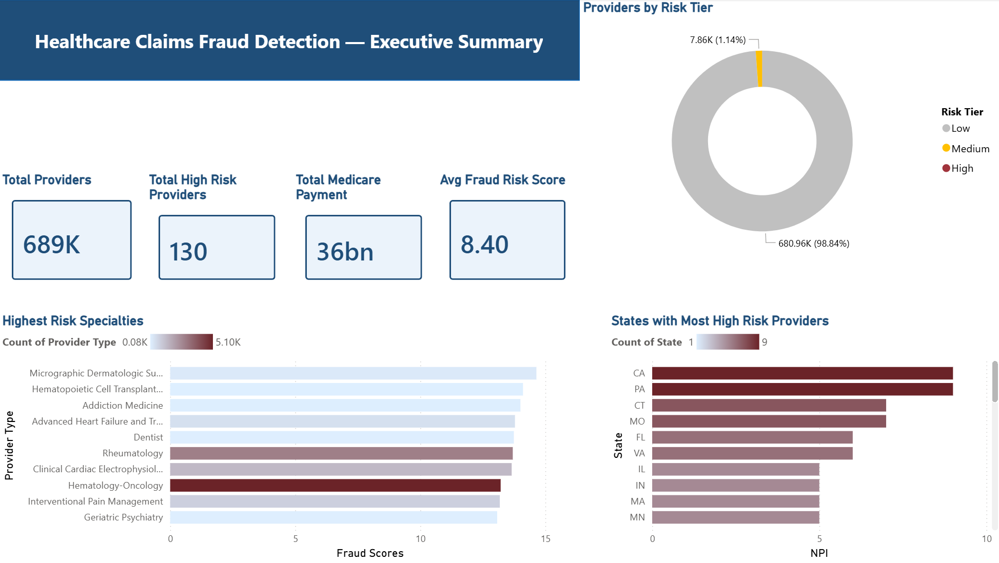
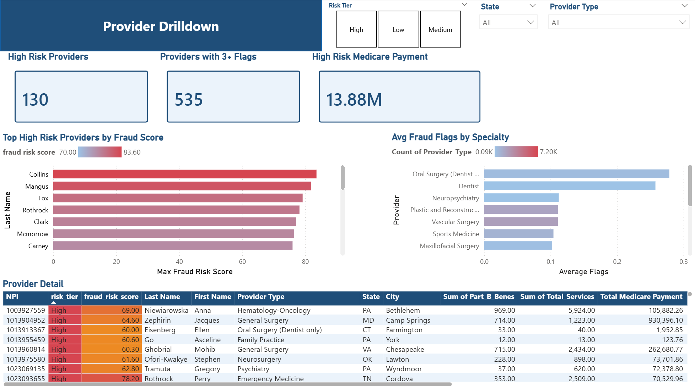
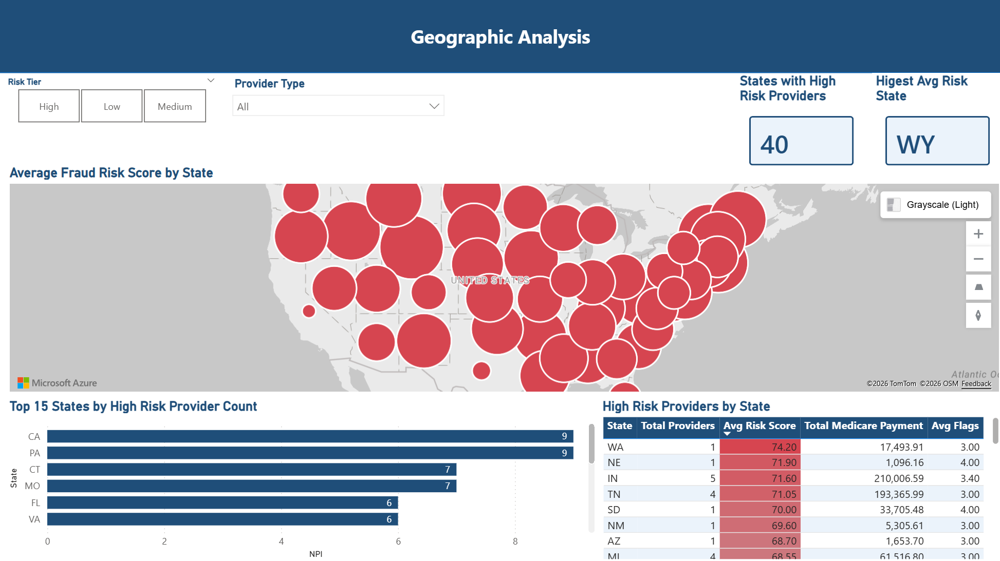
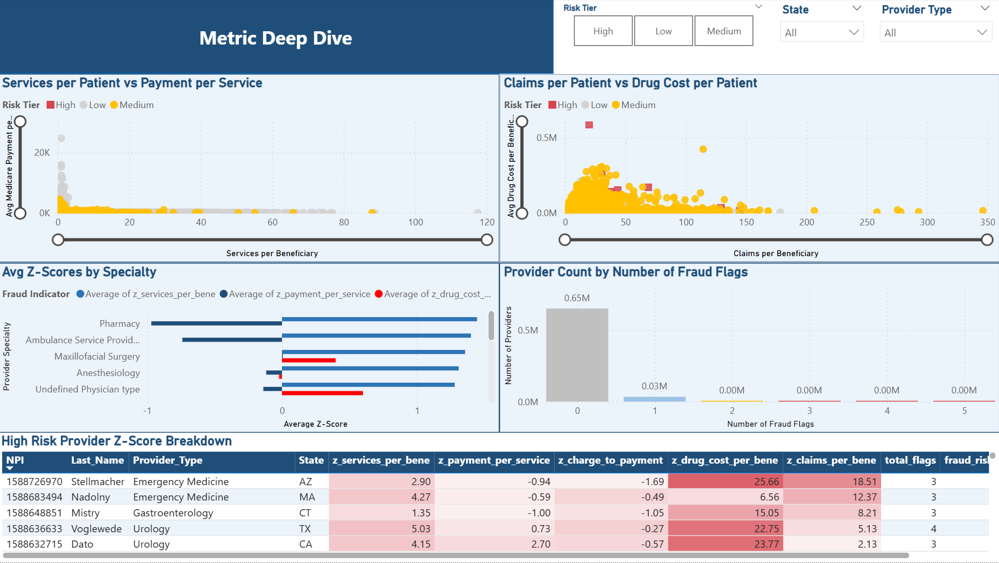

Client Background
Medicare is the largest federal health insurance program in the United States, covering over 65 million Americans and processing hundreds of billions in claims annually from 691,000+ active providers across all 50 states.
The compliance team responsible for identifying fraudulent billing was operating reactively, reviewing individual cases triggered by complaints, with no system to prioritize which of the 691,000+ providers warranted attention first. Reporting to the Head of Compliance, an in-depth analysis was conducted using CMS Medicare 2023 open data covering both Part B physician billing and Part D drug prescriptions.
"We can't review 691,000 providers manually. We have no way to know which providers actually need attention first or whether the ones we're investigating are the worst offenders or just the most recently flagged."
This comprehensive analysis provides a data-driven prioritization framework that compliance and audit teams can use to focus limited investigative resources on the providers most statistically likely to warrant review. The key insights and recommendations focus on the following northstar metrics:
Northstar Metrics
The available CMS Medicare data spans two primary dimensions: Part B physician and procedure billing (5,686,356 rows) and Part D drug prescription data (8,000,000+ rows), covering all 50 US states and Washington DC for the 2023 calendar year. Non-US territory codes (GU, VI, PR, AE, AP, etc.) were excluded from all analysis.
Breakdown of Metrics
Six separate fraud indicators were calculated per provider, three from Part B physician billing and three from Part D drug prescriptions. Each indicator was Z-scored against the provider's specialty and state peer group before being combined into a single composite fraud risk score.
How Z-Scores Work: A Z-score measures how many standard deviations a provider's metric is above or below their peer group average. A Z-score of 3 occurring in less than 0.3% of a normal distribution is the threshold for flagging. Z-scores were capped at 5 in the composite formula so no single extreme outlier dominates the final score.
Total procedures billed divided by total unique patients. Captures how many services a provider delivers per patient on average.
Providers billing an abnormally high number of services per patient may be performing unnecessary procedures or inflating service counts.
Total Medicare payments received divided by total services rendered. Measures the average reimbursement rate per procedure.
Providers receiving abnormally high payment per service may be upcoding, billing for more expensive procedure codes than the service performed.
The ratio of submitted charges to actual Medicare payment received. A ratio of 3.0 means the provider submits $3 in charges for every $1 paid.
Providers submitting charges far above what Medicare pays exhibit aggressive overbilling behavior, a pattern associated with fraudulent billing strategies.
Total drug costs generated divided by total unique patients. Captures whether a prescriber generates abnormally high drug spend per patient.
Prescribers generating extreme drug costs per patient may be substituting expensive branded drugs unnecessarily or prescribing at volumes far above peers.
Total drug claims filed divided by total unique patients. Measures whether a prescriber submits an abnormally high volume of prescriptions per patient.
Prescribers with extreme claims-per-patient ratios may be overprescribing, filing far more drug claims than peers in the same specialty and state.
Total drug costs divided by total claims filed. Identifies prescribers whose individual drug claims are consistently more expensive than their peers.
Providers with abnormally high cost per claim are consistently prescribing more expensive drugs per claim than peers, possible high-cost drug substitution.
Executive Summary
The model scored every active Medicare provider in the 2023 dataset against their specialty and state peer group across six simultaneous fraud indicators. Of the 691,000+ providers analyzed, 130 were classified as High Risk providers exhibiting statistically extreme billing behavior that cannot be explained by natural peer group variation.
Scored 83.6 out of 100. Services-per-beneficiary Z-score: 7.97. Drug cost Z-score: 11.01. Four of six fraud flags triggered simultaneously an extreme outlier behavior in both Part B and Part D billing combined.
Drug cost per beneficiary Z-score: 25.66 this is the single highest metric score across all 13.6 million rows of data. At 25 standard deviations above peers, this provider appeared completely isolated from all others on the scatter plot.
Wyoming had the highest average fraud risk score of any US state. California and Pennsylvania had the highest counts of High Risk providers by volume. 538 providers triggered 3 or more simultaneous fraud flags, a secondary tier of concern.
Micrographic Dermatologic Surgery had the highest average fraud risk score by specialty. Emergency Medicine and Urology showed the highest average Z-scores for services per beneficiary. Oral Surgery and Dentist specialties had the most fraud flags on average.
Key Takeaways & Recommendations
- The model reduced the audit universe from 691,000+ providers to a prioritized list of 130, a 99.98% reduction in scope, concentrating on the most statistically anomalous billing behavior in the dataset.
- Peer benchmarking by specialty + state is essential. Without it, rural providers and high-volume specialists would be systematically over-flagged due to natural differences in billing patterns across disciplines and regions.
- Geographic concentration in CA, PA, and WY suggests structural patterns worth deeper investigation at the regional compliance level, not just individual outlier cases.
- Investigate the 538 multi-flag providers quarterly. These providers did not reach the High Risk threshold but show consistent anomalous behavior across multiple billing dimensions simultaneously.
Insight Deep Dive
The Power BI dashboard was built in five pages, each designed to answer a specific question for the compliance team. The analysis pipeline ran from raw CMS data through six layered SQL views before reaching the final fraud_risk_scores view connected to Power BI.





Image not found: Medicare-fraud-images/Metric_Deep_Dive.png';" >Recommendations
Based on the insights uncovered in this analysis, the following actionable recommendations are organized by priority.
Immediately Review the Top 130 High Risk Providers
The 130 providers classified as High Risk (score 60+) should be the first priority for formal compliance review. These providers exhibit statistically extreme behavior across multiple fraud indicators simultaneously, not just a single elevated metric. Begin with the top 20 by composite score, which includes providers with Z-scores above 7 across two or more billing dimensions.
Escalate the Arizona Outlier - Z-Score 25.66
The Emergency Medicine provider in Arizona with a drug cost Z-score of 25.66 represents a statistical anomaly that cannot be explained by peer group variation. At 25 standard deviations above peers, this case warrants expedited escalation regardless of composite score. No natural variation in a peer group produces a Z-score of this magnitude.
Place 538 Multi-Flag Providers on Quarterly Monitoring
The 538 providers triggering 3 or more simultaneous fraud flags did not cross the High Risk threshold but show consistent anomalous behavior across multiple billing dimensions. These providers should be added to a quarterly monitoring program. If scores increase across successive annual data refreshes, escalate to formal review.
Brief Regional Compliance Teams: Wyoming, California, Pennsylvania
Wyoming's highest average risk score suggests systemic state-level billing patterns, not just individual outliers. California and Pennsylvania's high provider counts indicate volume-driven concentration. Regional compliance offices in these states should receive filtered dashboard access and state-specific High Risk provider lists.
Investigate High-Risk Specialties: Micrographic Dermatologic Surgery & Emergency Medicine
Micrographic Dermatologic Surgery had the highest average fraud risk score by specialty. Emergency Medicine and Urology showed the highest average Z-scores for services per beneficiary. A specialty-level deep dive could identify whether anomalies are driven by a small number of extreme outliers or represent systemic billing pattern issues across the entire specialty.